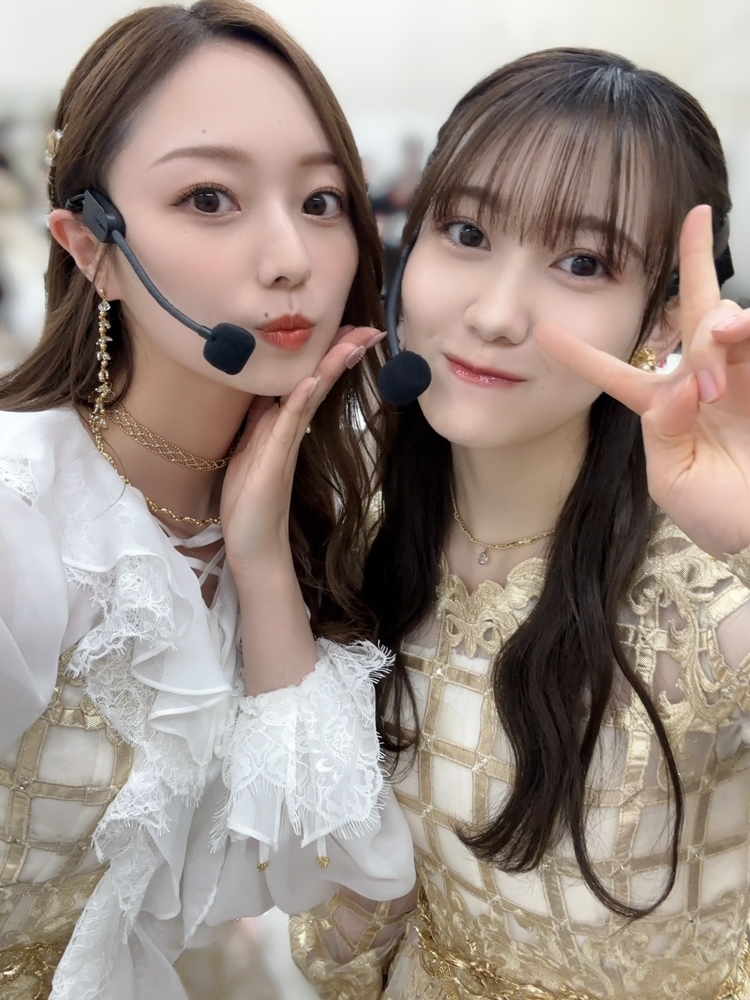
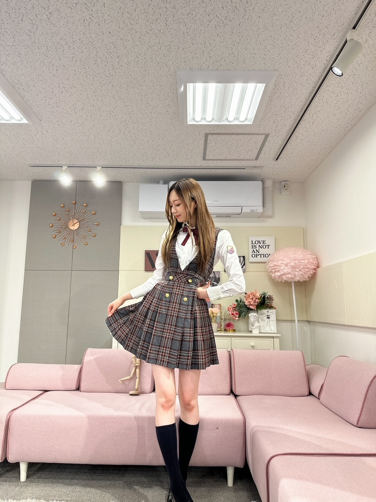
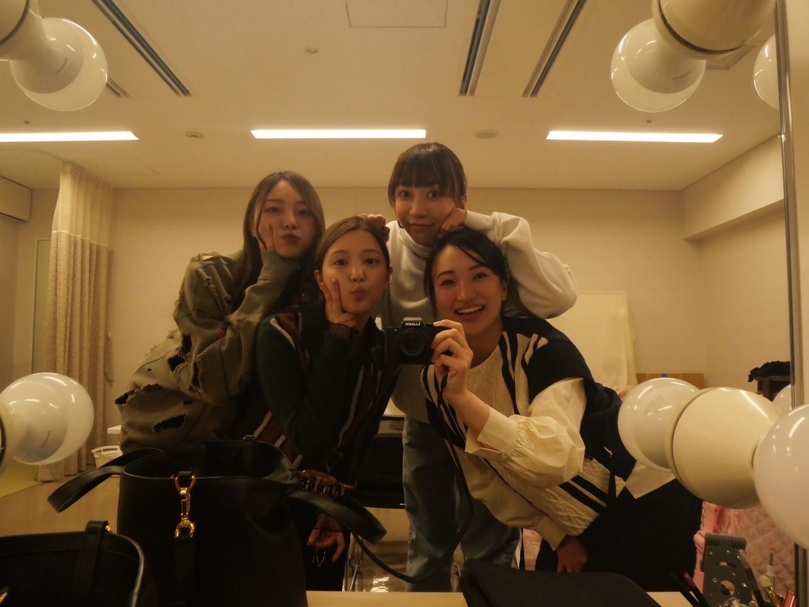
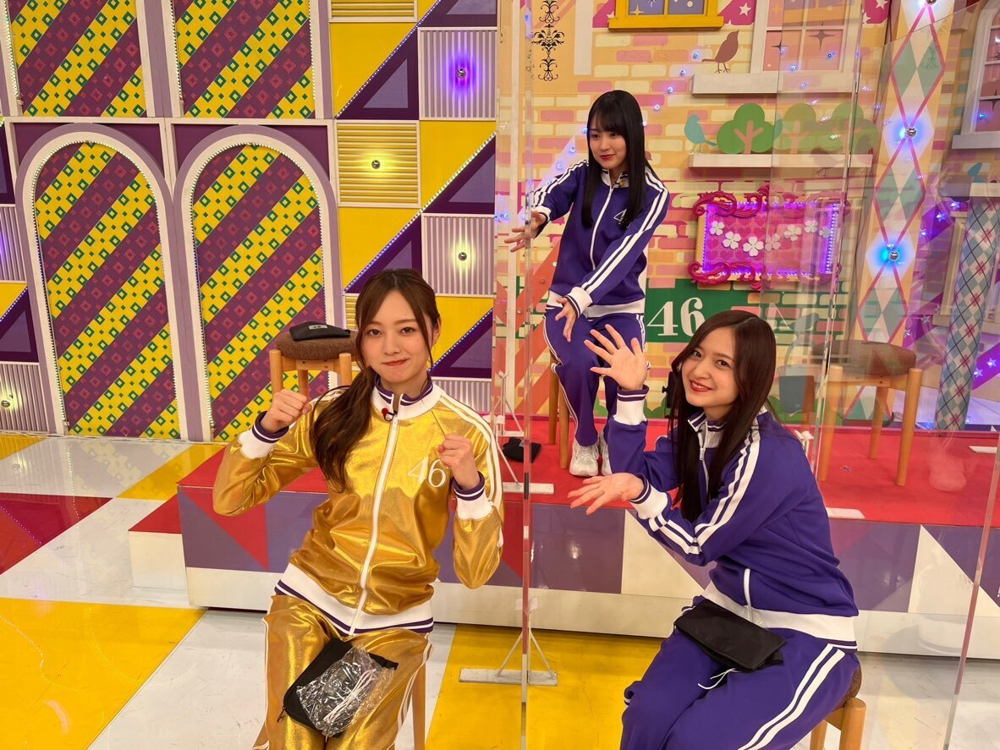
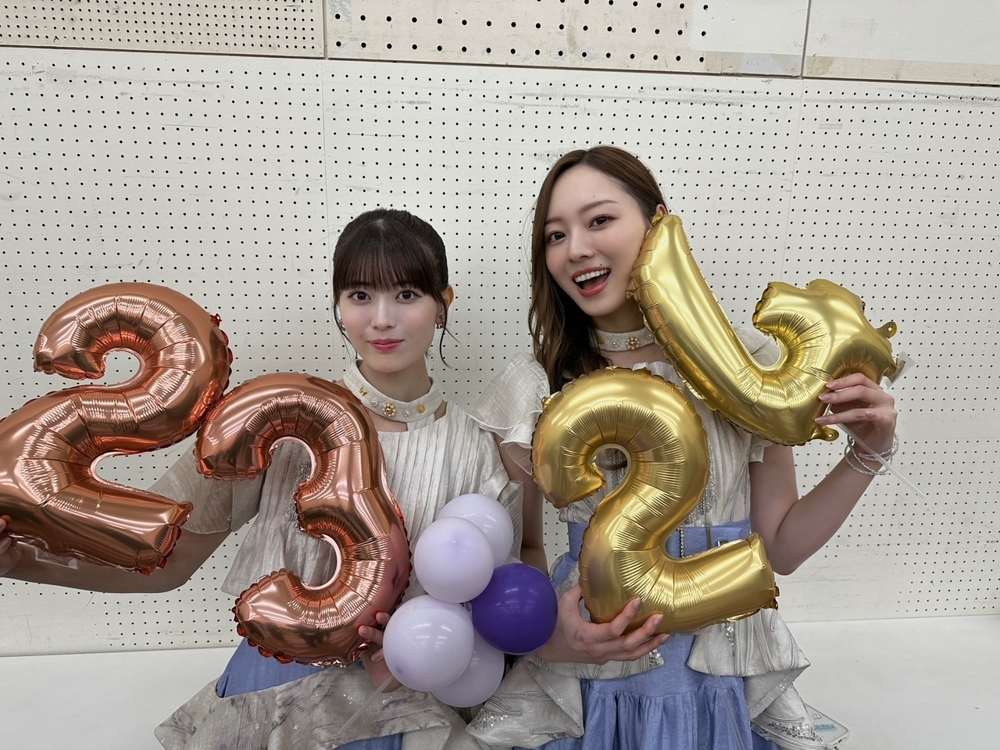

おわりとはじまり
１年間、お疲れ様でした！
皆様、ほんとうに、
お疲れ様でした！
そして、日々 温かい応援、
心よりありがとうございました。
１年だと思えないくらい
ぎゅっとしてたー！
心が健康でいられている今があって、
本当に良かったです(^^)
なによりも、
日常が当たり前のように戻ってきて
気にするところが少しづつ減って
笑顔が色んな場所で増えた気がして
それが何より。(^^)
たくさん声を聞かせてくれて
ありがとうございました。
キングダムからはじまった
１年でした。
大きすぎる帝国劇場、
各地回って公演を重ねた日々も
もう遠い過去になりました
怖かったし、
さいっこうに楽しかったなあ！！
また舞台、立ちたいです(^^)
やっぱりとっても好きだと思いました。
重ねていかないと意味が無いから、
しっかりグループでの役割もこなして
個人でのお仕事も増やせますように。

みゆ

YOASOBIさんのアイドル、
踊らせて頂きました、、
光栄です。

きんぐだむ！
みんなに会いたいなあ〜

頼りないかもしれないけれど
自分らしく頑張ります
個人的には、この１年
諦めて、諦めることをやめて、
の繰り返しだったような気がしました！
私に
何を求められているのか
何をすべきなのか 、
とっても理解しているほうだと思います。
でも、どうしても
あっちへ こっちへ と
手を伸ばしたくなる日々。
そのためにはもっともっと
野望を抱いてもいいのかな、と。
でも、色々ひっくるめてもやっぱり
長年、やってこれた
事実があるわけだから
自分のこともちゃんと認めてあげて
少しのわがままを言葉にすることをやめないで
２０２４年、頑張ります！
お芝居、もっとやっていきたい磨きたいし、
ファッションのお仕事も やっていきたい！
あとは、女性らしさを
しっかり持てるようにね(^^)
強くあらなきゃいけないときと、
すっとぼけて いなきゃいけないとき
多くあるので、
私を推してくれている皆様には
かわいいって思っていただきたいので、
がんばらなきゃ〜（笑）
いつも、ありがと(^^)

２０２４年も、
たくさん楽しいこと共有できますように！
たくさんのわくわくと、無邪気さと、
持ち合わせて
いっぱい笑えますように！
皆様の幸せを
心より願っております。
どうか、これからも
乃木坂４６を
よろしくお願いいたします。
Original：https://www.nogizaka46.com/s/n46/diary/detail/102198?ima=4932&cd=MEMBER